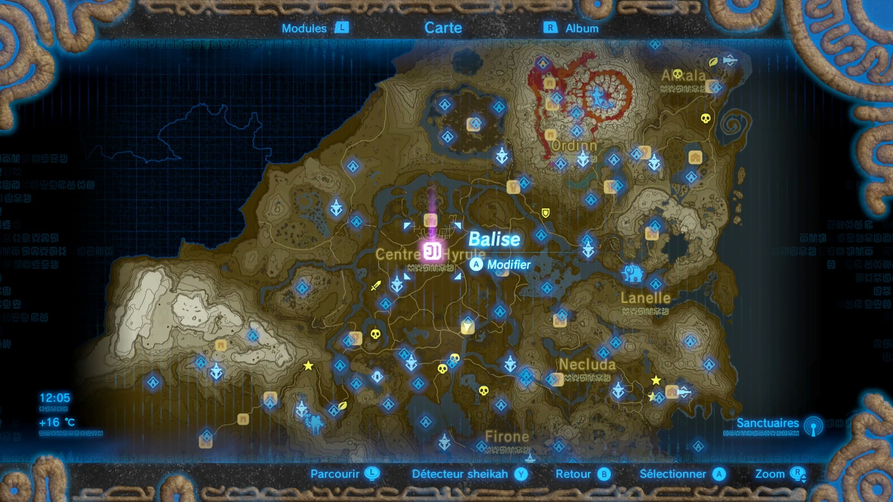

Repoussé maintes et maintes fois Zelda Breath of the Wild (Le souffle de la nature) est enfin disponible ! Il est enfin temps d'incarner une nouvelle fois Link pour sauver la princesse Zelda. Le jeu a été très très bien reçu, il est le deuxième jeu le mieux noté de tous les temps après Zela Ocarina of Time preuve que la licence est encore bien vivante et qu'elle se porte bien !
Il y a pas mal de grosses nouveautés dans cette version disponible à la fois sur Switch et Wii U. La première, et pas des moindres c'est que pour la première fois le jeu est en monde ouvert ! (Voir la carte ci dessous)
Une des grosses nouveautés c'est les premiers DLC pour Nintendo qui apportent du contenu en plus en échange d'un certain prix.
Nintendo "actualise" donc sa formule avec des critères qui font déjà référence chez les autres éditeurs tout en conservant la profondeur de sa licence et le résultat est plus que satisfaisant il n'y a qu'à regarder les notes et les ventes !